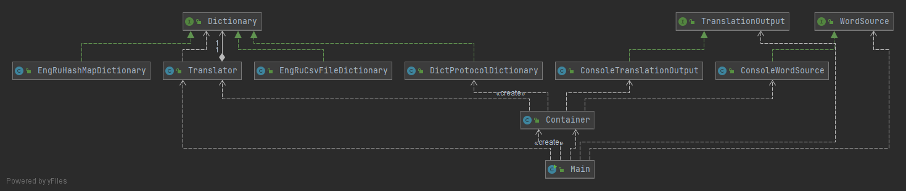

Context class helped us to separate creation and configuration of application components. However, it becomes a bit cumbersome when the number of components increases, thus we will try to implement a simple DI container for the application.
Additional services makes our application more complicated 